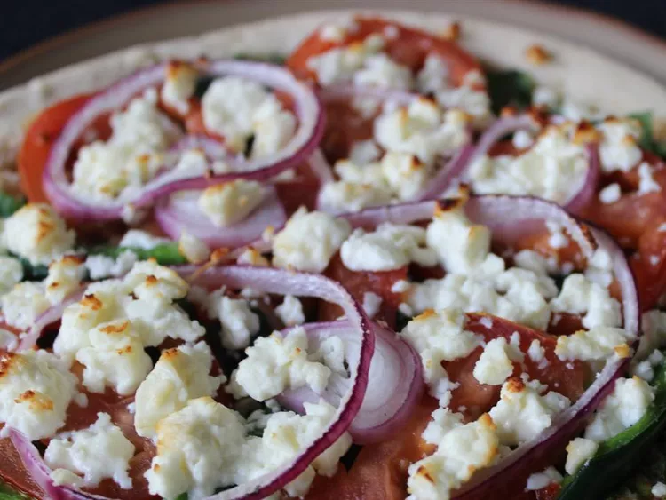

Pizza

A look at the final product
If you are not a fan of the typical redsauce pizza, or just want to try something different then definitely give this one a go. It still has a light tomato taste!
Ingredients
- 2 tablespoons of butter
- 1 tablespoon olive oil
- 3 tablespoons of minced garlic
- 2 tablespoons sun-dried tomato pesto
- 1 teaspoon dried basil leaves
- 1 teaspoon died oregano
- 1 tablespoon grated Parmesan cheese
- 1 unbaked pizza crust
- 1 sliced tomato
- 1 bunch of fresh torn spinach
- 1 sweet onion sliced
- 1 fresh jalapeno chopped
- 6 ounce of feta cheese, crumbled
Directions
- Preheat oven to 200C
- In a small bowl combine the butter, olive oil, garlic, pesto, basil, oregano and parmesan cheese
- Spead mixture evenly on the pizza crust
- Arrange tomato, spinach, onion and jalapeno ontop of pizza. Topped with crumbled feta cheese
- Bake until golden and crisp